多图预警！
姊妹问题《星球大战》中有哪些有名的梗？
既然是姊妹问题，那首先来个姊妹答案~~
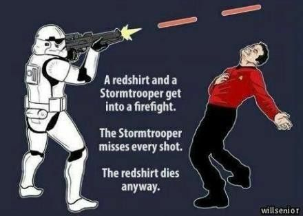
还是这张图，上回说了 SW 风暴兵怎么也打不准，这回是右边红衫怎么都会死→_→
TOS 里对制服颜色的分级是这样的：金色一般是指挥层，蓝色是科学、医疗部，红色是工程、安全部，因此，显然出外勤时，除了主角之外，还有这些一般会因为各种各样的问题挂掉的，最主要穿着红色制服的船员……
比如这位：
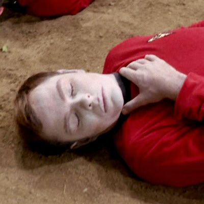
再比如这两位：
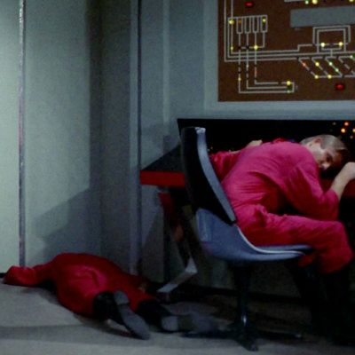
还有，在 JJST 里银女士原来的轮机长奥尔森，在亚轨道跳伞的最后开伞太迟，被卷进 Nero 那艘矿船的光束里蒸发了→_→
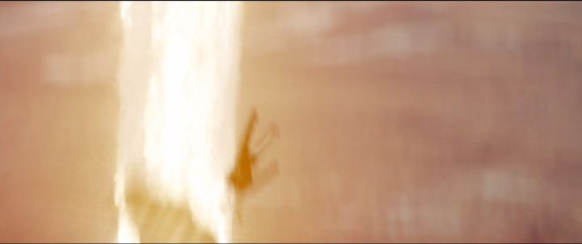
一个绝妙的形容：
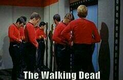
这个链接是粉丝对 TOS 里挂掉的龙套的总结，虽然三色的都有，但是红色占比还是最大 (；一_一)
于是，美国著名科幻作家约翰•斯卡尔齐针对“主角总是死不了而龙套总是会死”这个现象写了下面这么本书：
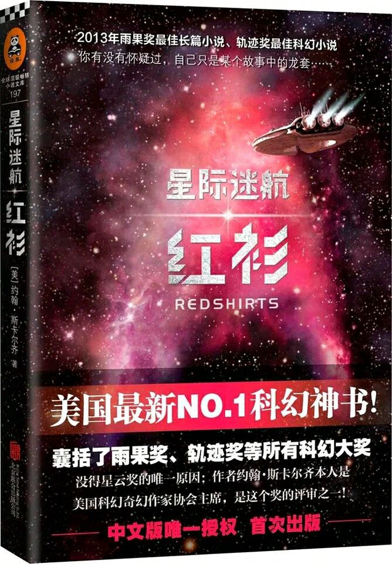
顺便做一个纠正，这本书就叫 Redshirts，上面那个星际迷航是出版商自己加的，用意不言自明。作者借这个梗对“主角光环”这种天下无敌的武器进行了大肆吐（pi）槽（pan） 其实是致敬 _(:3」∠)_
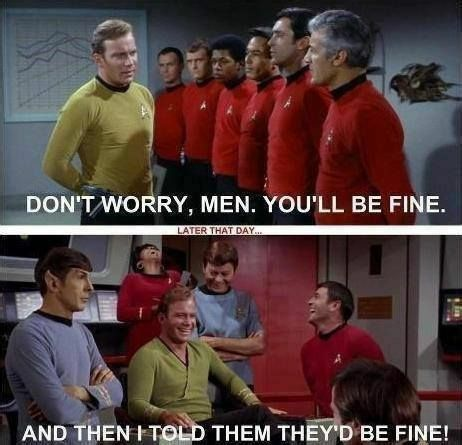
既然提到 SW，那再放下面这张图，字幕组干的好事，大家都懂~~
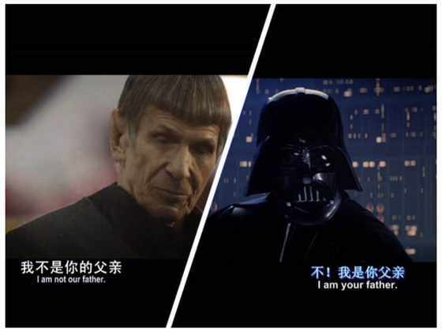
下面是其他的一些梗
首先是紧接着上面的，TOS 里总是死红衫，于是铁三角里的 Bones 总是会说：He's dead, Jim...
这个梗有答友详细说了，这里就不多说。
说到 Bones，他还有句名言，后来这句名言还被其他的医生，比如 DS9 中的 Bashir 和 VOY 中的 EMH 拿来用：I'm a doctor, not a...
毕竟 TOS 乘员组基本上都是万能的，而柯流氓（Kirk）经常叫他的好基友 McCoy 干其他的事，于是 McCoy 就经常用上面这句话推脱~~
到了后来 JJST，这句话又被翻出来用了 0.0
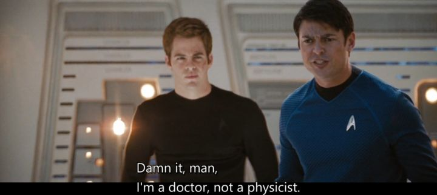
感谢 @张铭禹 的补充
Tribbles
要问 ST 里最萌的是什么？根据粉丝投票，结果大概是 Spock 第三，Data 第二，Tribbles 显然第一~~~~~~
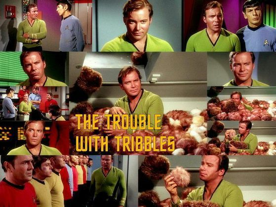
TOS 2*15，The Trouble With Tribbles，后来 DS9 5*19 还是 ST30 周年时专门制作的致敬集（当时 DS9 和 VOY 都做了致敬集，但 DS9 显然完胜 VOY）
这一群毛茸茸的小家伙萌翻了有木有！
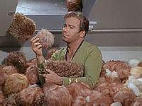
后来 JJ 又把它拿来，不过去掉了它特别能吃的特性，这就不好玩了 QAQ
LLAP
这个是最众所周知的梗，科幻圈打招呼和祝福的基本用语，是瓦肯人的 Hello
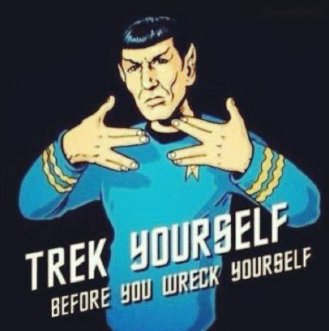
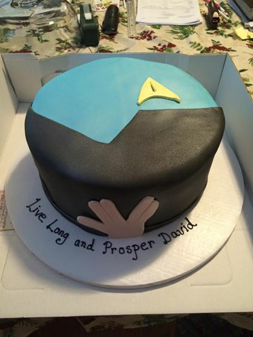
伴随着 LLAP 的是一个著名的手势，这个手势来源于希伯来语，שלום，最后一个字母。上面那句希伯来语意思也就是 Hello
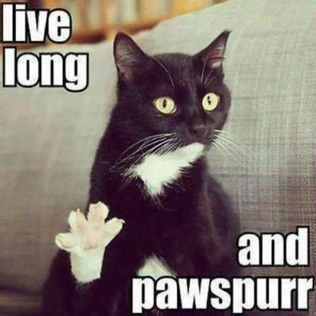
瓦肯掐脖术
瓦肯人爱好和平，然而他们的体质要比人类好很多，瓦肯人擅长掐脖【什么鬼，一招必杀，干净利落~
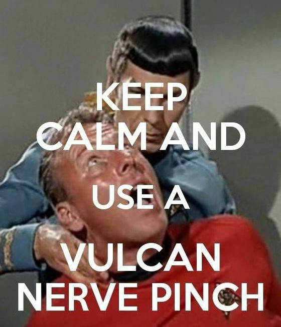
到后来 JJST 中，ST11 里 Spock 掐晕了 Kirk（好基友果然相爱相杀→_→），12 里 Spock 试图掐晕 Khan 结果没有成功，但是可汗显出很明显的痛感的表情，可见其力度。
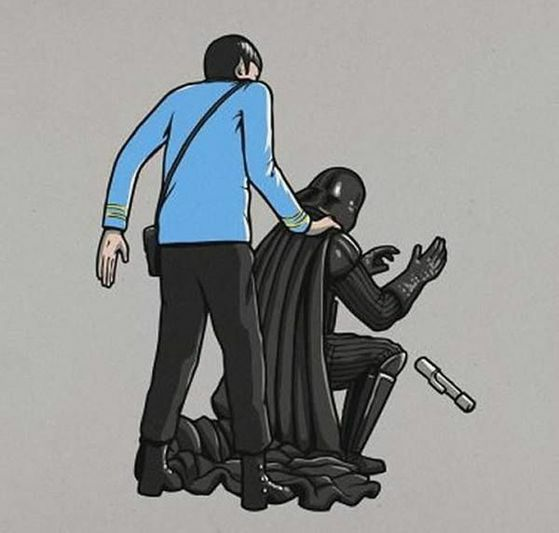
Picard 表情帝
TNG 的主演，Patrick Stewart 爵士，他可不只是 X 教授，让他出名的其实是 TNG 里的 Captain Jean-Luc Picard（不过让一个英国人来演法国人真的好嘛……）
Picard 是著名的表情帝，曾被用过暴漫图片，如下：
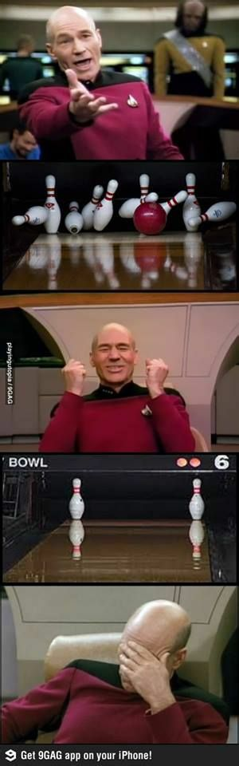
第一张图是不是很熟悉？第三张图是不是很熟悉？
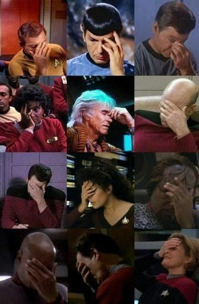
另外 ST 里的捂脸照很多，有外粉做了总结，其中第二行最后一个⊙▽⊙
皮卡德（皮卡丘，皮光头）的神照很多
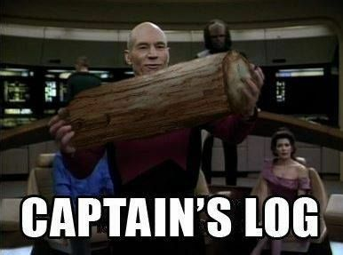
TNG 6*25
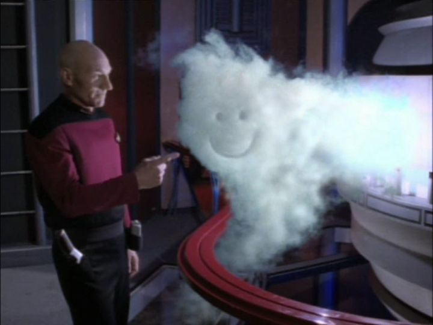
国内粉丝对皮光头的大肆恶搞~
这是最有名的，入选暴漫的一张
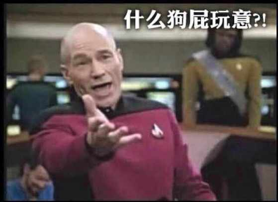
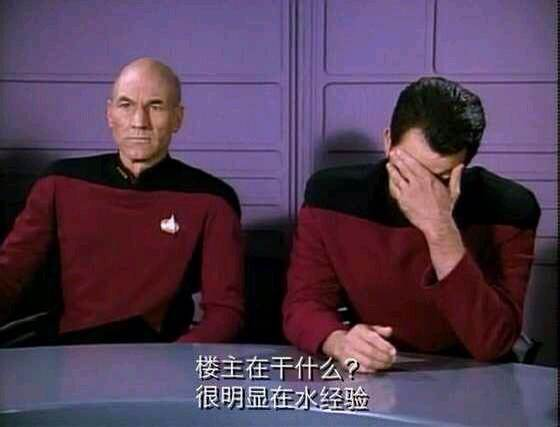
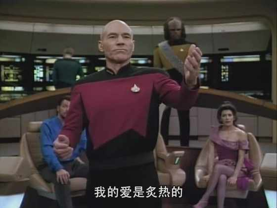
【高能预警】
【高能预警】
【高能预警】【重要的事说三遍】
连拍准备发射
3
2
1
发射！
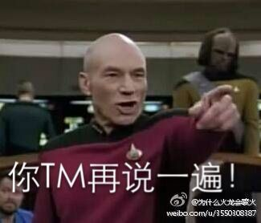
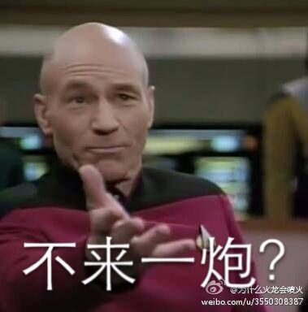
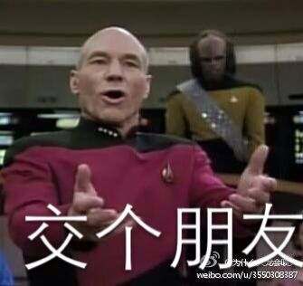
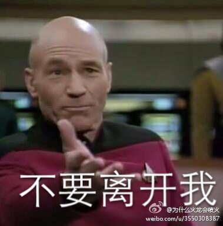
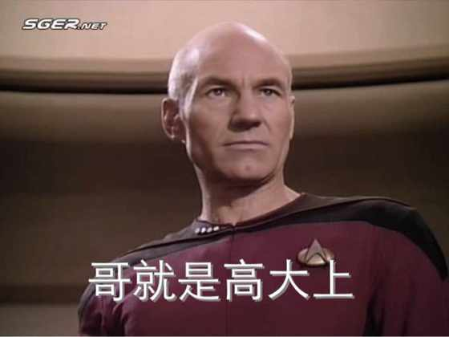
The End~~
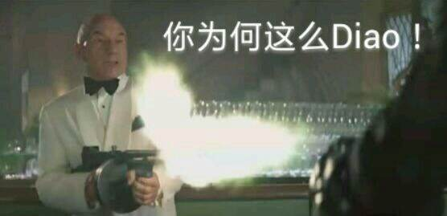
JJ 光晕
2009 年，派拉蒙在冻结 ST 影视系列的 4 年后，终于依靠 JJ 艾布拉姆斯的新版重启了这个系列。然而，新版在剧情、设定、技术等多个方面的更改让很多老版粉丝觉得十分不适应，因此多为新版入门的新版粉和老版粉之间的冲突，就成了新时期 ST 粉丝圈中的主要冲突。
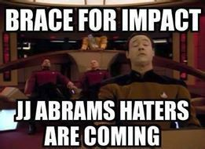
当然，JJST 除了上述的修改外，还有一个显著的特点，就是从头到尾的光晕，以至于国内国外都在喷这一个设计。
专门恶搞结局的动画制作团队 HISHE 做的 How Star Trek（2009）Should Have Ended，其中就有吐槽光晕。
超搞笑 星际迷航的结局应该是这样(中文字幕)—在线播放—优酷网，视频高清在线观看
国内粉丝的吐槽：（皮光头再次中枪）
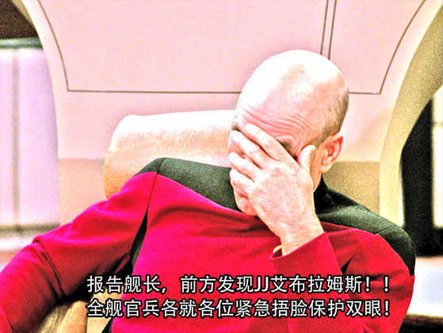
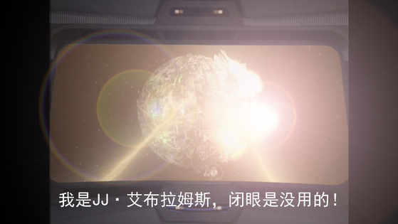
【施工中】
既然提到 JJ 艾布拉姆斯，就不得不说，他其实是一个 SW 粉，一直想拍 SW 的电影，在毁了 ST 两次之后，终于如愿了，扔下 ST13 的烂摊子（虽然说 ST13，准确来说叫 Star Trek：Beyond，现在进展还算比较顺利= =），屁颠屁颠儿过去拍 Ep.7 了......
于是，在 JJST 两部电影里，就都留下了他的作案证据：
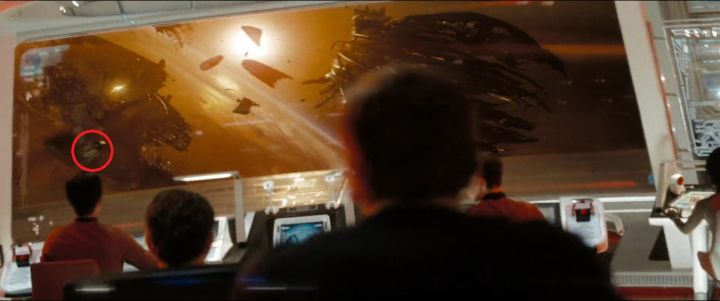
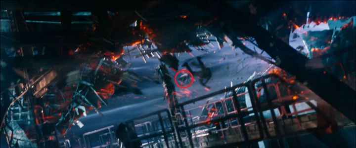
红圈看到了没有？仔细看，那是什么？没错儿，R2-D2！
其实因为工业光魔为多部 ST 电影做过特效，因此在老版电影中也能找到 SW 飞船串进来的图像，ST8（Star Trek：First Contact）中就出现过千年隼（尽管我怎么都没找到= =）
宇宙 CP
TOS-TAS-AOS 里的 Kirk-Spock 组合被誉为宇宙 CP【本部分施工中，稍后补全】
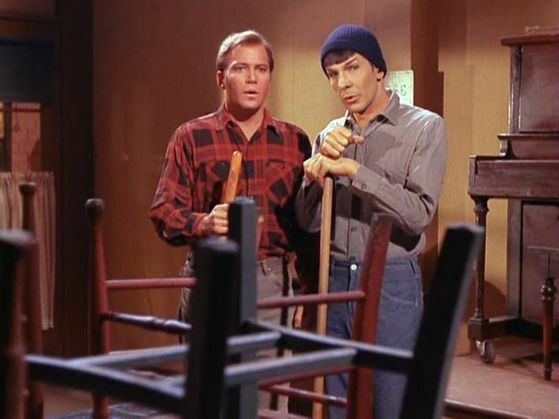
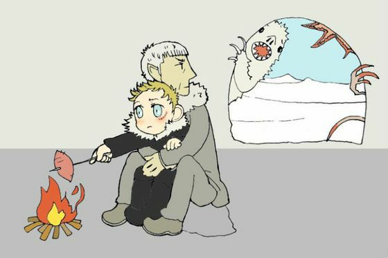
神级语言克林贡语
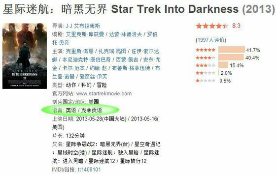
克林贡人和克林贡语是 ST 系列中形成的亚文化最有影响力的一支【仍然施工中= =】
玛丽苏
出自 ST 同人小说的梗
出自 ST 同人小说的梗（可见 ST 的影响力有多大）
1973 年，Paula Simth 写了本名为 A Trekkie's Tale 的小说，讲了一个叫玛丽苏的 15 又 1/2 岁的少女，只身穿越进 ST 的世界，并且拯救全场征服所有人......作者呢，借此吐槽了当时 ST 粉丝圈里“主角光环”过于强大，而不注重剧情变化的作品横行的不良风气。后来……居然给传开了= =
现在在各地随处可见有关玛丽苏的同人作品，而且光是名字就已经衍生出了各种各样的版本……
维基百科：
（这真的是最后一个）（圈内比较深的梗）基岩做的 NX-01
这个是国内一个 ST 圈子里流传已久的梗。【施工中】
最后 - -
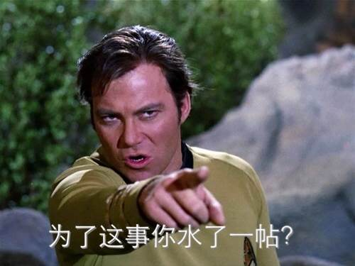